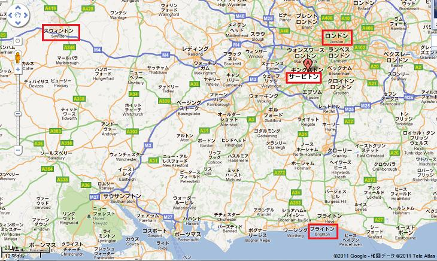
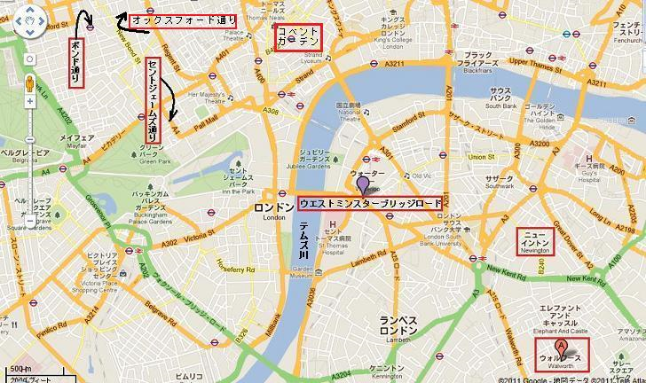
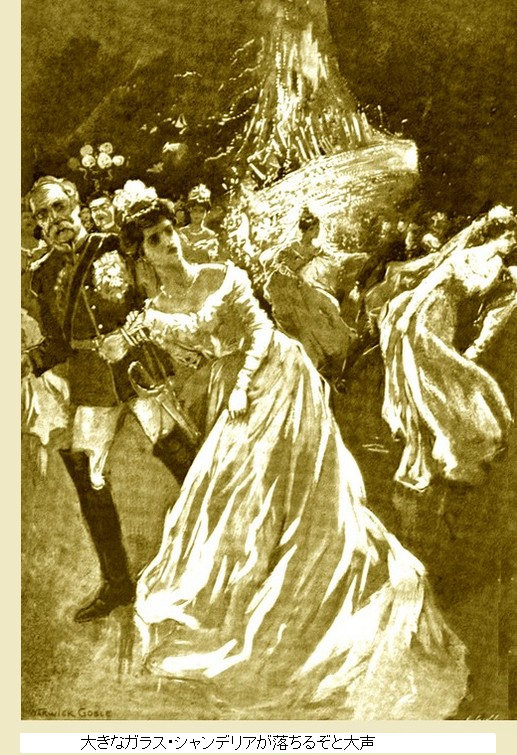
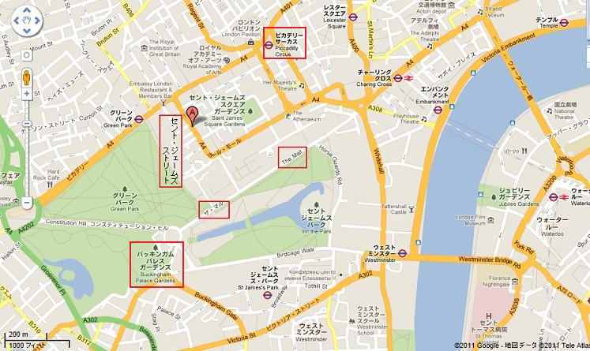
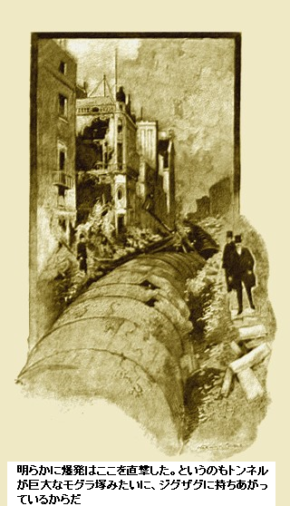
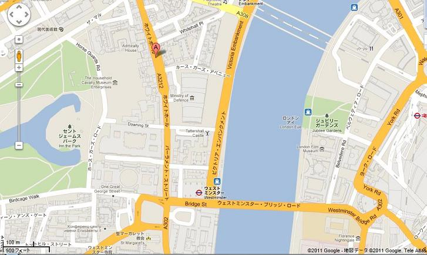
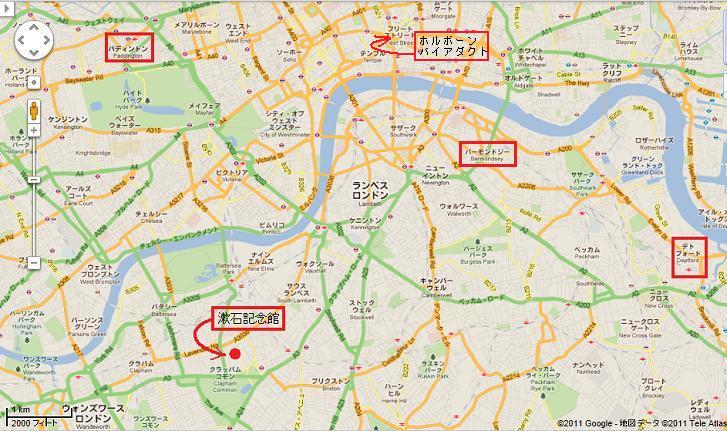
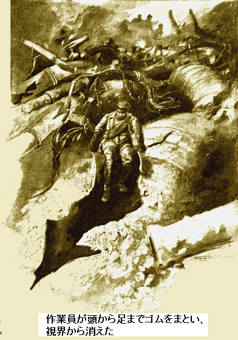
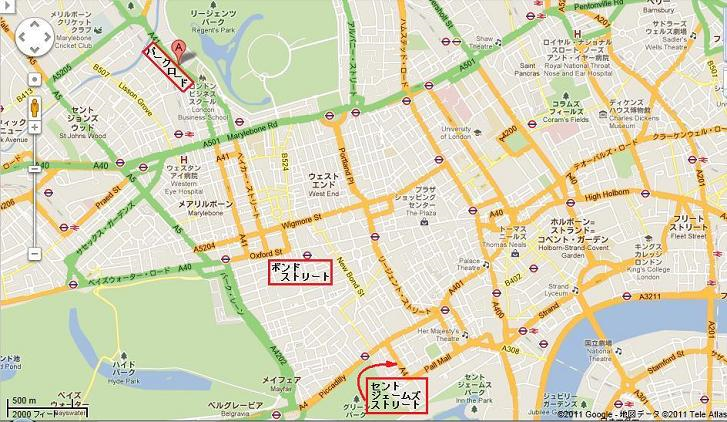
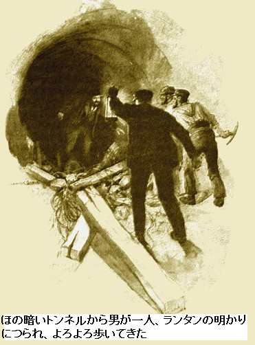

［＃ページの左右中央］
来たるべき事故物語――ロンドンの地下にトンネルが縦横に張り巡らされ、電気鉄道に使用された時、地下鉄で爆発が起こったら
［＃改ページ］
ようやくロンドン最大の問題が解決したようだ。交通の不便が解消された。もう一等乗客も、その十四倍もの三等乗客も、受難者同士、通勤に難儀しなくなった。
もはや特定の郊外に人気が集中することはなく、陸の孤島もなくなった。後者はシティー到着までロンドン・スウィンドン間の急行列車と同じくらい時間がかかる。
サービトンより通勤時間が短いという理由で、ブライトンに住む愉快な奇策は無くなった。地下鉄がすっかり解決してくれた。

ロンドンの地下には少なくとも十二本の
一日中、駅構内は明るく、乗客があふれている。真夜中に近づくと運行が減り、午前一時半頃、最終列車が出る。終夜営業運転はまだだ。
いま完全に静寂になったのが、明かりに照らされたトンネルの

トンネルの心壁があかあかと照らされている。霧や闇の気配はない。電気を普通に使うようになって、ロンドンの暗闇が大分減った。
いまや電気モーターがほとんどの工場や現場で使われている。従来通りガスも消費されるが、基本的に暖房用と加熱用だ。電熱器や電気調理器はまだ普及していない。それも時間の問題だ。
青いアーク灯の炎に照らされて、十数人の男たちがトンネル心壁の天井で作業している。頭上の水道管になにか不都合が起こって、
新米の職人が親方に言った。
「オルガンの舌みたい。あれは何ですか」
「ガス、水道、電灯、電話の管だ。誰が知るか。ここが分岐だ」
「切ったら面白いでしょうね」
と新米職人がニヤリ。
親方はしれっとしている。むかしは腕白坊主だった。現場は予想よりずっと大仕事に見えた。大部隊に仕事を引き継ぐまでに
一時間で足場組立が終わり、残骸を取り除いた。明日の夜、大部隊がやってきて、コンクリートをうち、天井に綱帯をとりつける。地下鉄は無人だ。まるで光り輝く空洞のように見え、あちこちでまばゆい光源に照らされている。
しんと静まり
でも大したことはない、というのも、いまは完全に運休しており、夜明けまでに運転を再開しないからだ。もちろん、通勤の早朝列車があり、コベントガーデン市場行き列車もあるが、この線は走らない。真っ暗やみの中、天然ゴムの焼ける悪臭が漂った。時間がどろ〜んと過ぎた。
ボンド通り沿いの大電球が消えた。制御盤の照明も全部消えた。でもいま夜中の一時過ぎだし、大したことはない。こんな事故は整備の良好な地区でも時々起り、朝には直る。
しかしながら、ちょっと困ったことが起こった。というのもバッキンガム宮殿で公式舞踏会が進行中だったからだ。晩餐会が終わり、ふかふかのドレスや華やかな軍服が豪華な部屋にきらめいていた。ダイヤモンドの頭飾りが揺れ、光をあわく反射した。ピカピカの床はダンスの足さばきがあった。そのとき、あたかも見えざる力が電源を断ちきったかのように、照明と喧騒が消え、暗闇が
あまりに突然のことに悲鳴があがった。まぶしい明かりに慣れた眼にとって
直ちに
階下の電気技師は頭をひねった。というのも制御盤のヒューズを見ても無傷だ。宮殿に関する限り、電気回路の短絡はない。おそらく電源所で事故があったのだろう。数分で修理されるだろう。
しかし、時間が経っても、きらめく光の洪水は戻ってこなかった。
チェンバレン議員が命令した。
「ろうそくの出番だ。さいわい昔のシャンデリアが備わっておる。ろうそくをつけよ」
まことに奇妙で異様な光景だった。高価なダイヤモンド、きらめく衣装、
再び同閣下がのたまった。
「先祖のような心地だ。ご先祖さまはろうそくに火をつけるとき、とうとうこれが最後かもしれないと想像されたと思うね。ジョージ卿、外も同じ真っ暗かな」
ジョージ卿が笑った。庭から戻ってきたばかりだ。
「
「朝の四時半だ。正確だよ。今年のこの時間にしては暖かいな。地下から何かゴロゴロというような音が聞こえないか。あれは何かな」
突然バンバンという音がして、まるで千
ひびや亀裂が壁にスッと走り、側面からガラスの割れる音がガチャン。突然切り裂くような金切り声がキャーと上がり、大きなシャンデリアが落ちるぞ、と大声。一斉にスカートをゴソゴソと引きずり、美しい顔が真っ青になるや、大きなシャンデリアが床にガシャーンと落ちた。

全世界が揺れ、足はがくがく、宮殿はブンブン、ゴウゴウとハープの弦のような音を出している。慌てふためき、不思議な出来事に不意打ちを食らい、
英国で最も勇敢・公正・最高位の人々が千五百人、身を寄せ合ったところは、ひょっとして残酷な死刑執行室になったかもしれない。女性は恐怖で男性にしがみつき、細かい階級区別という一線を越えた。いまや共通の危険を前に、みんな人の道を失った。
短時間で地面の揺れが止まり、危険は去った。再び真っ青な顔にちょっと赤みが戻った。男も女も自分の鼓動が聞こえたような気がした。誰もまだ沈黙を破らない。だって演説などお門違いだもの。
遂に誰かが言った。
「地震だ。地震に間違いない。ちょっと強かった。電灯切れの原因だ。ガス配管がやられていればもっと悪い事故が起こるぞ」
足元の地面が静まり、白い粉も落ちなくなった。男どもの胸中に冒険心がむくむく。ここにじっとして何もしないのは、論外だ。
ともかく、今晩のお楽しみはおしまい。舞踏会には母親も大勢おり、最大の関心事は家庭だ。おそらく王室の歴史上、大行事を非公式に中断した例はないだろう。王と女王はちょっと前に退席された。こんな状況下では配慮ある思慮深い行動だ。女たちは急いで外套を着て、肩かけを掛け、一斉に四輪馬車を探しに外へ繰り出し、宮殿外でつかまえるほかない。
しかし、空車の馬車はほとんどない。間抜けな下男は不意の災難に動転し、オックスフォード通りやボンド通りが通行不能で、どの家も潰れたという話にすすり泣く始末。その方向へ行く馬車などない。道路が破壊されている。あとは何も分からず、心底怖がっていた。
歩くより仕方がない。夜明けまでたっぷり二時間あるが、何千人もの人々が屋外へ出た模様。二キロ以上は、明かり一つ見えない。バッキンガム宮殿のまわりは刺激臭のほこりが舞い、石炭ガスで吐き気がして、体に悪い。どこか大量に漏れているに違いない。
誰もどうなっているか分からない。みんな誰彼なしに尋ねている。それに暗いため、災害場所を特定することは難しい。
ジョージ卿が連れのバルコム議員に言った。
「世の終わりだな。以前ちょっと読んだ怪奇物語のようだ。でも寝る前に原因を
二人の感じではザ・マル方角の公園を横切っている。

バルコム議員が同意した。
「了解。クラブが無事なら良いが。ガスが漏れているけど、マッチをすっていいかな」
「いいさ」
とジョージ卿があっさり返事。
ヴェスタ・マッチが燃え、小さな紫色の円になった。向こうにちらっと椅子が見え、二、三人群れている。のけ者や、ツキのない連中で、いま
「だれか何が起こったか知らないか」
とバルコム議員が
「世界の終りだよ。好きなように言えばいいさ。ものすごい爆発だった。この世があの世へ燃え上がったかと思うと、パッと消えた。最後の審判ラッパが鳴るのを待っているんだ」
といい加減な返事。
「その時、調べなかったのか」
とバルコム議員が
「ああ、下の地面がちょっぴり欠けたような気がした。そのあと石やら、レンガのかけらやら、あらゆるものが降ってきた。そばの壊れたボイラーは空から落ちてきた。動きなさんな」
だが若い二人の貴族は先へ進んだ。ついにセント・ジェームズ通りと
道路が割れて、ガタガタになっている。クラブの正面は巨大なナタでバッサリ切られたようにむき出しになっている。粋な家具店を覗き込むようで、家具が完璧に備わっている。またあちこちの裂け目に、家がすっぽり落ちている。
道路自体がなくなっているのを見ると、地震のせいじゃないようだ。地面のすぐ下から強い光がちらちら、音がごうごう。傾いたガス管が、ティーポットの注ぎ口のようになり、二本隆起して、ぽきんと折れている。これに何らかの方法で火がついたものだから、およそ百メートルにわたり、辺り一面が巨大な炎の明かりに照らされている。
興奮して青い光を見た。あたかもロンドンが包囲攻撃で完全破壊されたかのよう。何千という狙い澄ました砲弾が爆発したかのよう。家々はレンガとモルタルの破れ笠のよう。重厚な家具が道路へ吹っ飛んだかと思えば、安物装飾品が小棚にチンマリ収まっている。
おびえた様子の警官がよろよろやってきた。
バルコム議員が大声で訊いた。
「キミ、何が起こったんだ」
警官が平静を取り戻して、敬礼して、うめいた。
「怖かったあ。地下鉄が事故です。粉々に壊れました」
警官はしばらく完全におじけづいていた。じっと立ちつくし、ガス管がごうごうと燃える中、ぼうっとして、痛ましい。
「なにか言ってくれ」
とバルコム議員が求めた。
「本官はピカデリーにいました。あたりは完全に静かで、見る限り一人もいませんでした。そのとき聞こえたのが変なゴーという音、ちょうど急行列車が無人駅に突進するような音でした。そうです、幽霊列車そっくり、音はすれども姿は見えずって奴です。だんだん近づいてきて、地面全体が震え、まるでピカデリーに突っ込んだようでした。そのためセント・ジェームズ通りへ投げ出され、そのあとガチャーン、バーン、本官は道路の真ん中にひっくりかえっていました。明かりがすべて消え、一分か二分間、崩壊現場にいました。そのあと気がつくと、ここをうろついてました。あの巨大な燃焼の明かりのせいです。だんな、とにかく地下鉄が爆発したとしか言いようがありません」
この事実に疑念はない。一方では、がれきが空高く積み上がり、他方では深い穴が廃溝のように長く伸びている。そのちょっと先で、地下鉄の心壁が露出し、鋼帯が裂けて、ぱっくり。
「何かの電気災害だな」
とジョージ卿が独り言。
このころになるとだんだん明るくなってきて、災害の大きさが分かるようになった。セント・ジェームズ通りのクラブの中には無傷な所がある一方、めちゃめちゃになった所もあった。
石が引っくり返り、粉々の山になり、ガラスが割れてキラキラ光り、壁が何枚か歩道にブラ下がり、危険だ。そしてなおガス管がごうごうと燃え続け、やがて炎が紫から

ピカデリーの大部分もだんだん明るくなってきた。明らかに爆発はここを直撃した。というのもトンネルが巨大なモグラ塚みたいに数メートル、ジグザグに持ちあがっているからだ。木製舗道があたりに散乱し、保育園で子供の巨大積み木箱を床にぶちまけたみたいだ。
トンネルが持ち上がり、コンクリート表面が壊れ、鋼製の心壁がねじれ、ピカデリーに黒い蛇がのたくっているようだ。間違いなく、セント・ジェームズ通りの地下鉄で、爆風が突き当り、ここで恐るべき破壊力を示した。
オックスフォード通りに大勢の野次馬が集まった。路面全体が濡れている。壊れた配管から水が側溝を流れている。ガスくさい臭いがする。通りの時計は全部狂っているようだ。バルコム議員が自分の時計を見ると、ぐるぐる回っているじゃないか。興奮ぎみに、ささやいた。
「いやあ、ここは危険だ。電気が充満している。むかし仕事を終えて時計を置き忘れたとき、同じ現象が起こった。電気はゼンマイばねに反応するんだよ」
高電圧の太い電線やコイルが地面のあちこちから飛び出している。コイルは巨大な蓄電池へつながっており、人をも殺す大電流を勝手に流す。
一匹の犬が濡れた道路を横切り、一本の電線を踏んだ途端、一瞬で焼失、犬と
「かわいそうなやつだ。ひょっとしたら私たちに起こったかもしれない。威力を知らないのか。乾いた地面ならひどい衝撃だけだが、濡れたら、ヒトは死ぬぞ。このあたりにゴム手袋とゴム靴がないか。ぞっとする光景を見たあとでは怖くて前に一歩も進めない」
実際、予防策が必要だ。客車を引いた一頭の馬が封鎖道路の向う側からとっとっとやってきた。排水の換気格子に
バルコム議員が声もかすれんばかりに叫んだ。
「ゴム靴だ。キミ、私らが戻るまで動いちゃいかん。みんな、道路から離れろ」
道路を泣き叫んで走ろうものなら即死だ。御者は座ったまま恐怖であらぬことをしゃべっている。
少し離れた
半死半生で御者は座席から下り、バルコム議員に担がれて歩道に運ばれた。御者の顔左半分がだらんとゆがみ、左腕は動かない。
ジョージ卿が言った。
「恐怖で脳卒中だ」
バルコム議員が叫んだ。
「違う。強力な電気ショックだ。手を挙げてみな」
次第に御者の顔と腕の引きつけが治った。
「雷なんぞ二度と会いたくねえ。何者かにギュッと胸を掴まれ、心臓が凍った気分だ。動けなかった。あっしの上着を見て」
上着の左上半分に触れただけで灰になった。奇妙な見えざる力の怪奇現象だ。目撃者には強烈な恐怖となった。
この不可触、不可視の危険性と言ったら、瞬殺と相まって、可視世界の悪者より一層たちが悪い。
バルコム議員がうながした。
「家に帰ろう。神経に触る。恐怖が脳に焼き付いて怖いよ」
一方、事故の原因追求はのんびりできない。
首都の各所にある電源を切っても危険は回避されそうになかった。地下鉄に沿って点々と膨大な蓄電池が配置されており、当面手が回らない。このような蓄電池が道路に忌わしい危害を及ぼす。
州議会の電気専門家オルトン・ロシター技師が初めて災害原因の手掛かりを掴んだ。前に何回か、ガスと電気が接触してこの種の小事故を起こしていた。
ガスがマンホールや排水管に漏れ、電線の短絡で火花が出て、発火したことがあった。この数年、一八九五年にさかのぼっても、この種の事故が報告されている。
だがどうしてガスが地下鉄に漏れるのか、鉄管はコンクリートの中に埋め込んであるというのに。地下鉄を修理中に事故を起こさない限り、こんなことにはならない。
地下鉄連合のファーガソン部長がロシター技師に全情報を教えた。ボンド通りで心壁が崩落したのは、水道管の水漏れにより地盤沈下したためだ。前の晩、場所をつきとめて、修理をする為に、鋼帯が取り除かれていた。
オルトン・ロシター技師が割ってはいった。
「ファーガソン部長、一緒にボンド通りへ行ってくれませんか。そこからトンネルへ入れるでしょう」
ファーガソン部長は喜んで了解。
ボンド通りの損傷はそれほどひどくなかったが、昇降口はガレキが埋まっており、通路を切り開いて駅に侵入する必要があり、やっとトンネルへ
二百メートルほどトンネルは無傷だ。その先はガスが充満している。長い鋼帯が天井から垂れている。ちょうどそこに丸い穴がすっぽり道路まで貫通しているので、ガスがあっても呼吸と作業が可能だ。
ロシター技師がぶつぶつ言った。
「慎重にやらなくちゃ。小一時間、とにかくロンドンのガスを完全に止めなくては。ガス管が破れたままでは全域が極めて危険だ。見ろ」
指差す先にはガス本管が垂れており、短絡した電線が管を溶かしている。ここが要するに原因のすべてだ。ガス本管から濃厚なガスがシューシューとトンネルに何時間も漏出した。空気と混ざり、最強のすさまじい爆発を起こしてしまった。
「始発列車は何時ですか」
とロシター技師が
ファーガソン部長が答えた。
「朝市用の四時です。つまり蓄電池置場の電流スイッチを三時四〇分に入れます」
「それでここが電源所の一つですか」
「そうです。当然何が言いたいかよく分かってますよ。実際、地下鉄の全路線にガスと空気の恐ろしい混合気体が多少なりとも満ちています。電流を流した途端に火花で混合気体が爆発します。怖い、とても怖い。その通りです。ここの担当者を見つけられればよいが。でもそれは奇跡だ」
やはりというか、担当技師がスイッチを入れた。地下鉄の電流がガス爆発を起こし、運よく技師はセント・ジェームズ通りへ飛ばされた。爆発で操作室から持ち上げられ、しばらく気絶。
だが技師は何もしゃべれない。まさに全スイッチのうち第一番目を引いた結果の爆発であった。そのあと技師の記憶はない。
とにかく災害原因は判明した。さらなる惨劇を防ぐために、直ちに各ガス会社に連絡して、すぐガス供給を止めるよう要請した。瞬く間に、地下鉄の危険区間が安全になった。
＊
午後になって、委員会が全線を調査した。当初、ロンドンが半壊したかのように思われた。まだ損害の全額は見積もることができない。セント・ジェームズ通りだけで損害は確実に何百万ポンドに登る。
ホワイトホールとパーラメント通りの下手、ウェストミンスター橋そばの損害は甚大だった。ここに鋭角な曲がりがあるため爆風が集中し、大損害を与えた。地面に大きな穴と溝ができ、家がそっくり崩落した。

このころになると通りを歩く人々の大半がゴム靴とゴム手袋を完全装備していた。想像に難くないのは人の生死がゴムの薄皮一枚、厚さ一・五ミリのシリング硬貨より薄いことだ。休火口の地殻を歩くようなもの。薄氷を高速でスケートするようなもの。
夕方になると、ぞっとするうわさが流れた。デトフォードから二両の特急列車が出発し、恒例の観光団をパディントンへ運ぶという。観光客は五百組の夫婦で、パディントンからウィンザーへ行く予定。こんな事を見落とすなんてあり得ないし、信じられない。
だが、五時頃になると、恐るべき真実が判明した。二両の特急列車が出発した由。なんで忘れたんだ。

新たな恐怖だ。早朝に特急列車を走らせるなんて、最終テロ行為だ。おそらく全員吹き飛ばされてしまっただろう。助かるチャンスは百万に一つだ。それでも事態を収拾するために何かやらなければならない。
誰も方法を知らない。しばらくみんな気が動転していた。初めから絶望したかのよう。その瞬間、自然に皆が注目したのが地下鉄連合のファーガソン部長。それに州議会専門家のオルトン・ロシター技師。
「着手方法は？」
とロシター技師が尋ねた。
ファーガソン部長が答えた。
「デトフォードから始めましょう。まず確認すべきことは、列車がデトフォードを出発した正確な時間と、最初の爆発が起こった時間です。いいですか、爆発は次々起こります。地下鉄内には大量の空気があります。爆発ガスと空気がぶつかれば方向転換、つまり大穴があきます。爆発で大穴があいて、空間がポッカリ開くはずです。スイッチを入れると地下鉄のあちこちで火花が飛ぶはずです。実際、鉱山を同時発破するようなものです。瞬時に発火するため一連の爆発が一発の大爆発のように聞こえます。だからそんな様子が道路で見られたかもしれません。場所によってはトンネルがあたかもガス管のように地中でぐにゃり曲がるかもしれません。また、何も損傷しない通路もあるでしょう。この考えに同意しますか」
「同意しますけど、何が言いたいのですか」
「ええ、この考えで絶望的にならないか心配ですが、使えるに賭けます。ほんの可能性、とても可能性は少ないですが、地下鉄を走る特急列車が未爆発の所に差し掛かったとします。列車の前後で爆発するので、当然列車は瞬時に使い物にならなくなり、進退きわまり、入口へも出口にも行けません。何も楽観的なことはないし、恐ろしい事態になるでしょう。ともかく、やるべきことは明白です。デトフォードへ行かなければ。さあ早く」
デトフォードへの道のりは容易じゃなかった。多くの道路が持ちあがっていたので、移動は困難を極めた。壊れた道路は危険だ。自転車が使えそうだ。ゴムタイヤが電気を通さないからだ。
ゴム手袋とゴム靴でさらに保護できる。だが、転んだらという考えが、ちらりよぎってぞっとした。手袋が破れるかも、靴が脱げるかも、それに……。そんな考えには耐えられない。
「ブロンディンという男がよく背中に荷物をしょって運んでいたけど、あの男の気持ちが今まで分からなかった。でもいま奴の気持ちが分かるよ」
とロシター技師が言いながら、両人は着実に自転車をこいでバーモンドジーを過ぎた。
道路は危険のない所も無人だ。男も女も恐る恐る外に出て、道路の向う側に行きたい風だが、すっかり
一方、災害を解決しようと、組織的な試みも行われた。必要上、時を経ずして、正確な損害を見積もらねばならないし、人命損失は言うまでもない。
しかしながら、巨大な蓄電池を撤去して致死電流を切るまでは、何もできない。ロンドン特定地に関する限り、ホルボーン・バイアダクトが狙い目だ。地下の大きな貯蔵庫に、世界最大級の蓄電池がある。どんなことをしても安全にしなければならない。
だが、仕事はそんなに簡単じゃない。理由はここのトンネルが崩落してひん曲がり、あたり一帯に高圧電線が張り巡らされ、触れれば死ぬからだ。電流の威力たるや都市を破壊するほどだ。人がすれ違う空間もないし、あいにく危険は目で察知できない。無警告だし、逃げる暇もないから、過酷すぎる。もし安全域から一センチでも踏み出したら、一巻の終わりだ。優秀な労働者が辞退しても不思議じゃない。
トンネルを吹き飛ばすほかない。実際、周りの建物に危険が及び、嵐に遭遇したようになるかもしれないが、やけっぱち対策のやけっぱち瞬間だ。
こうしてダイナマイトを大量に爆発させて、露出した地下道に長い裂け目を作った。そのあと、一人の作業員が命がけで開口部に入った。見物人はほとんどいない。余りにも恐ろしくおぞましいため居たたまれず、滑りでもしたら即死するからだ。

作業員が頭から足までゴムをまとい、視界から消えた。戻るまで長い時間がたち、余りにも長いので同僚は行方不明になったとあきらめたほどだ。
火事や洪水やガスには耐えられる。だってこれらの危険には実体がある。しかし、ここにあるものは想像するだに恐ろしい。それにあんな死に方だ。体が瞬時に蒸発してカラカラの
だが、やがて気味悪い頭が通気口からにょっきり出てきた。顔は灰で真っ白だが、しっかりしている。明かりを要求した。
今までのところ成功だ。がれきの下に埋もれた蓄電池を探し当てた。蓄電池は固いコンクリートの中に、地下鉄の下に納めてあったのでそれほど損傷はない。
もはやなんら障害は無くなった。一団がランタンやろうそくを持ち、トンネルに沿って進み、大容量蓄電池を収めた地下貯蔵所に着いた。積み重なったレールと、割れた木端の下に、キラキラ輝く大理石製のスイッチ板が見えた様な気がした。
しかし、手を突っ込むのはまったく別問題だ。
ここまできたら、作業員をすくませる最大の危険と恐怖はない。しかし、とても期待できないことだが、普通の労働者が進んで働くか、ともかく働くか、だって一センチでも動いたら即死するかもしれないのだよ。だが、やることといえば結局些細なことだ。子供でも出来る。指を一本か二本使い、小さな握力でスイッチを切りさえすれば、危険は去り、蓄電池は自動的に安全になる。
とにかく、数人は恐れを知らなかった。何とか気迫で歩み、しかも慎重に進んだ。だって足元と頭上にある電線の束が、さながら森のイバラだもの。もし、一本でも折ったら、全員死ぬ。
この種の仕事は、頭皮をはがされるような、心臓を撃たれるような、極寒で汗をかくようなものだ。時々、がれきの上の電線が外れると、作業員たちは瞬時に大声を上げ、後ろへ下がり、息をはあはあ。
冬眠中のガラガラヘビがうようよいる鉱山で働くようなものだ。だが、次第に大量のがれきを撤去すると、スイッチ板が露わになった。スイッチを軽く触った。するとロンドン全域で恐ろしい危険がなくなった。太い電線も難なく扱うことが出来るようになった。電気が流れてないからだ。
長いこと無言だった。男どもは反動で身震い。一人がブランデーの大ビンを持ってきて、回し飲み。全員が飲み終わるまで決死隊の隊長はしゃべらなかった。
「きのうの朝から何年経った？」
と隊長。
「老人の一年かな」
と誰かが返答。
やがて再び地上へ登って行った。差し当たってここでやることがないからだ。野次馬が数人ニュースを聞きつけ、道路がすっかり安全になった由。この知らせは噂のようにパッと広がり、瞬く間に通りは人で埋まった。
二人の自転車がデトフォードへ着いたとき、駅はそれほど壊れてなかったが、ただ向かい側の事務所や構内は大破している。負傷した男が言うことに、観光列車が出発した一〇分後にトンネルでものすごい暴音が轟いた。ファーガソン部長はこの男の言った数値からサッと暗算をした。
「列車は爆発時パーク・ロード駅の直前だったに違いない。まさにチャンスだ。ガスの充満していない空間にさしかかり、爆風は抜けたに違いない。すぐ、パーク・ロード駅に行こう。道中、有志を

駅に到着してみると、群衆が集まっていた。
ファーガソン部長がささやき声で言った。
「みんな集まれ。もう支障なく作業できる。地下の哀れな連中が生きていれば、三〇分で救い出さねば。明かりがあればなあ。ありったけのランタンを借りるなり、盗むなりしてくれ」
近くの警察署がたちまちこの問題を解決してくれた。小部隊の特殊専門家がパーク・ロード駅に移動。その間、群衆が通風口のところで奮闘して、やがて入口をこじ開けた。
駅はめちゃめちゃに大破していたが、トンネルは二百メートルを除き、無傷だ。その先は木材でぐちゃぐちゃにふさがれ、客車の後部が端っこに見える。木材がねじれ、角材が弓のように曲がっている。直ちにがれきの間に道を通し、ファーガソン部長が大声で叫んだ。
嬉しいことに、しゃがれ声の応答があった。ファーガソン部長がまた叫んでランタンを振った。ほの暗いトンネルから男が一人、ランタンの明かりにつられ、よろよろ歩いてきた。がっちりした典型的な労働者が
「やっと見つけてくれたか」
とだるそうに言った。
感情をすっかりなくしたようだ。目に感謝や喜びがない。恐怖の暗黒時を過ごした為に感情が麻痺している。
「最悪か」
とロシター技師が

男は同じように元気のない声で答えた。
「大勢死んだ。だが他の連中は客車内に座って最後を待っている。客車の明かりでちょっぴり助かったが、小一時間で消えてしまった。そのあと一人か二人、線路をよじ登ったが、まるで空に登るように高くねじれていたので、何か大爆発したのだろうと推測した。で、ほかの道を探したが、みんな木材でふさがれており、覚悟した。電気が周りに流れており、気持ちが悪いので、引き返して列車に戻った。明かりが消えたとき、しばらくみんな気が動転して、それから……」
男の唇がぶるぶる震え、どっと涙があふれた。ロシター技師が分かったと背中を優しくたたいた。泣いて激情が治まったようだ。
今やランタンの明かりが頭上で揺らめき、列車から半死の乗客が降り始めた。子供らは怖がって隅っこにうずくまり、眼前の惨状を見ようとしない。みな真っ白、ガタガタ身震いし、唇が震え、眼が妙に引きつっている。暗闇をどれほど長く感じたか、神のみぞ知る。
遂に全員外に出て、ふたたび祝福の陽光に包まれた。このころになると現場に医者が待機し、食糧や飲料が配布された。女性はほとんど座り込んで泣きながら、じっと子供を胸に抱きしめていた。男の中にも放心して泣いてるのもいたが、怒っているのもいた。暗黒の恐怖の為に
だが、危機の
「話す事はあまりないぜ。最初の一〇分かそこらは、いつもと変わりなく、列車はスムーズに走り、明かりも充分あったよ。それから出し抜けに止まって、みんな客車の中で吹っ飛んだ。頭から猛烈な嵐に突っ込んだみたいだった。客車を襲った強風音が聞こえたかもな。そのあとすぐに止んだけど。窓ガラスがガチャガチャ割れる音はマスケット銃のようだったぜ。列車から出て最初に見たのは機関士の死体、そのすぐ近くに火夫の死体もあった。まさに列車の先頭だった。そのあと出口を探したが見つからなかった。俺の横にいた男が、キミらが言うケーブルとかを踏んづけた瞬間、消えた。この話はしたくないぜ」
「何カ月もだろう」
とファーガソン部長が哀れ気に言った。
ロシター技師が応じた。
「月じゃなくて年だろう。あえて言わせてもらえば、長い目でこの災害は役立てるべきだ。偉大な社会ならそうする。損害額の予想は五千万ポンド以内だ。だが、
「あり得ないと思われたからね」
「全くあり得ない。でも今となっちゃ、たまたま起こったことだし、全てごく当然なように思える。さあ、仕事に戻って、忘れよう」
了